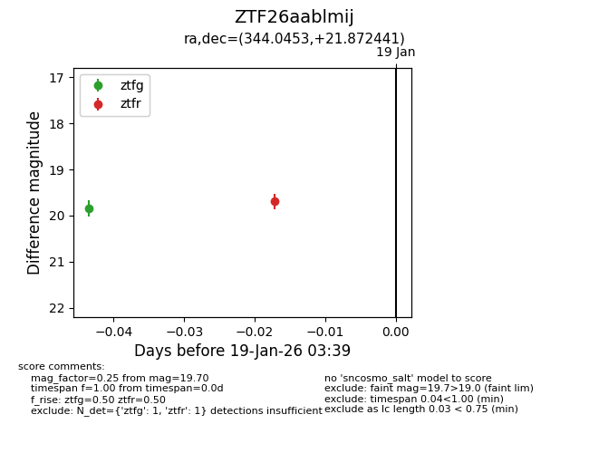
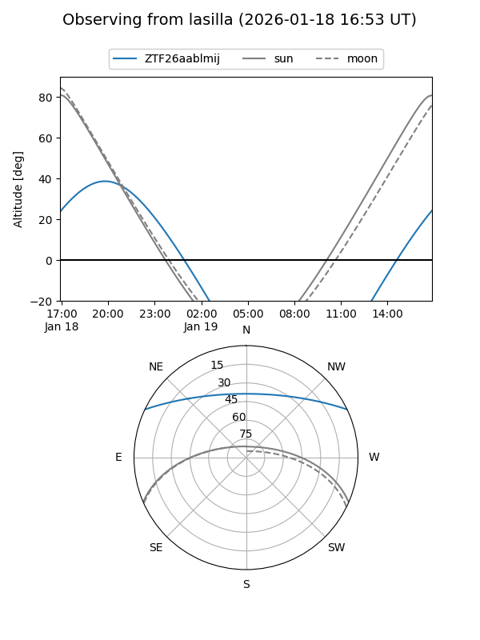
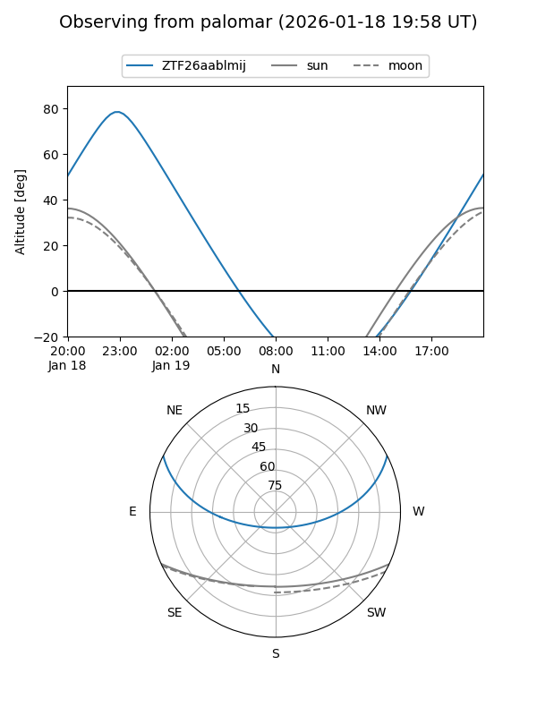

ZTF26aablmij
Target ZTF26aablmij at 2026-01-19 02:55
Aliases and brokers:
FINK: link
Lasair: link
ALeRCE: link
alt names
ZTF26aablmij (ztf,fink_ztf)
Coordinates:
equatorial (ra, dec) = 344.0453,+21.87244
equatorial (HMS+DMS) = 22:56:10.86,+21:52:20.79
galactic (l, b) = (90.4408,-33.62741)
Flags:
Photometry:
last ztfg=19.85
1 ztfg detections
Lightcurve

Visibility


Additional plots